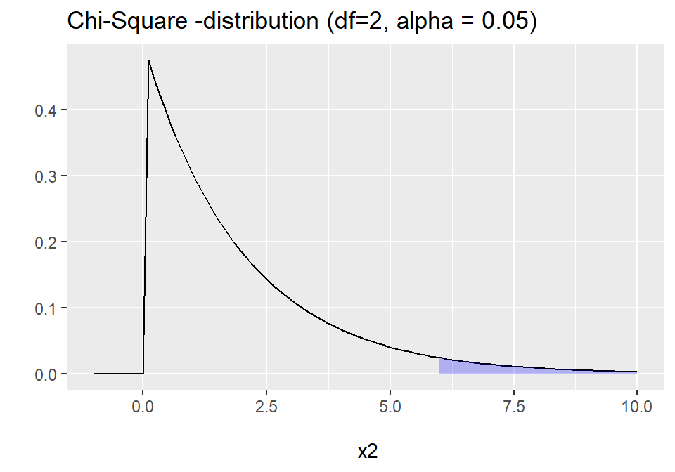

Lecture 19: Chi-Square Test
Data Analysis for Psychology in R 1
Tom Booth
Today
- Discuss two forms of \(\chi^2\) tests.
- Goodness of fit
- Test of independence
- We will consider:
- When to use each
- Data requirements
- Calculation
- Interpretation
- Assumptions
Learning objectives
- Understand when to use goodness of fit and tests of independence.
- Understand the logic of the underlying calculations
- Understand the structure of the R-code for completing the tests.
Purpose
- \(\chi^2\) goodness of fit test
- The primary purpose is to test whether the collected data (observed frequencies) are consistent with a hypothesized/known distribution (expected frequencies).
- \(\chi^2\) test of independence:
- We have 2 categorical variables, drawn from a single population.
- We want to know if the variables are independent or not.
- If the category membership is dependent, then knowing what category someone is in on variable 1, helps us predict what category they would be in for variable 2.
Data Requirements
- \(\chi^2\) goodness of fit test
- Single categorical variable
- \(\chi^2\) test of independence:
- Two categorical variables.
Example: Goodness of fit
- Suppose we are interested in the distribution of students across three final year psychology options (Social, Differential, Developmental).
- We have data from 2014-15, and we want to know if the distribution is the same in 2015-16.
Data
ID = Unique ID variablecourse = factor with 3 levels (Social, Differential, Developmental)
Relative frequencies
- In 2014-15, the department had the following proportions:
<<<<<<< HEAD
- Social = 0.50, or 50%
- Differential = 0.30, or 30%
- Developmental = 0.20, or 20%
=======
- Social = 0.20, or 20%
- Differential = 0.50, or 50%
- Developmental = 0.30, or 30%
>>>>>>> 17a6717de0f0af09eb6d1cf480d687988703815a
Expected frequencies
- Given this, and a total number of students (n=150) for the current year, we can calculate the expected frequencies for each area.
- \(Expected = Relative*N\)
Hypotheses
\[
\begin{matrix}
H_0 = P(0.20, 0.50, 0.30) \\
H_1 \neq P(0.20, 0.50, 0.30)
\end{matrix}
\]
- \(H_0\) says that the data follow a specific and known pattern or probabilities (frequencies)
- \(H_1\) says they don’t
Test statistic
\[
\chi^2 = \sum_{i=1}^{k} \frac{(E_i - O_i)^2}{E_i}
\]
- \(E_i\) = expected frequencies
- \(O_i\) = observed frequencies
- \(\sum_{i=1}^{k}\) = do the calculation starting from cell 1 through to cell \(k\) (k=number groups) and add them up.
Null Distribution
- Sampling distribution for \(\chi^2\) test is a \(\chi^2\) distribution.
- \(\chi^2\) distribution describes the distribution of the sum of \(k\) squared independent standard normal variables.
\[
\chi^2 = \sum_{i=1}^{k} \frac{(E_i - O_i)^2}{E_i}
\]
Null Distribution
- Parameter of the \(\chi^2\) distribution is degrees of freedom (df)
- df are determined by the number of categories (\(k\))
- Goodness of fit test has \(k-1\) degrees of freedom.
Calculation
- Step1 = \(E_i - O_i\)
- Step2 = \((E_i - O_i)^2\)
- Step3 = \(\frac{(E_i - O_i)^2}{E_i}\)
Calculation
- Last step is to sum the values for step 3 to get the \(\chi^2\)
Is my test significant?
- \(\chi^2\) = 38.6755556
- Degrees of freedom = 3-1 = 2
- \(\alpha\) = 0.05
Is my test significant?

Write up
A \(\chi^2\) goodness of fit test was conducted in order to investigate whether the distribution of students across Social, Developmental and Differential classes was equivalent in 2014- 15 and 2015-16. The goodness of fit test was significant (\(\chi^2\)(2) = 38.68, \(p\)<.05) and thus the null hypothesis was rejected. The distribution of student’s across courses differs between the two academic years.
Example: Independence
- I have conducted an experiment with three conditions (n=120, 40 per group)
- I want to check whether my participants are equally distributed based on some demographic variables.
- Let’s focus on whether English is participants first language
- Recall from an experimental design perspective, I want such things to be randomized across my groups.
- So I would expect an even distribution.
Data
ID = Unique ID variablecondition = experimental conditions (control, group1, group2)lang = binary Yes/No for English as first language
Visualizing Data: Mosaic Plot
- We can also show the same data as a mosaic plot.
Hypotheses
\[
\begin{matrix}
H_0: P_{11} = P_{12}, P_{21} = P_{22}, P_{31} = P_{32} \\
H_1: P_{11} \neq P_{12} | P_{21} \neq P_{22} | P_{31} \neq P_{32}
\end{matrix}
\]
- In words
- \(H_0\) says the proportion of each cell in each row are equal.
- \(H_1\) says at least one of these pairs are not equal.
Test statistic
- The test statistic looks much the same as the statistic for the GoF test.
\[
\chi^2 = \sum_{i=1}^{r}\sum_{i=1}^{c} \frac{(\hat{E_{ij}} - O_{ij})^2}{\hat{E_{ij}}}
\]
- What is different?
- \(\sum_{i=1}^{r}\sum_{i=1}^{c}\) simply means sum the quantities for all cells in all rows (r) and columns (c)
- But why \(\hat{E_{ij}}\)? Why the hat?
Expected frequencies
- Remember in the GoF test we knew the expected frequencies because we had known proportions and known sample size.
- Here we do not have that.
- So we have to estimate the expected frequencies from the data.
- Hence we use \(\hat{E}\) to show this is an estimate.
\[
\hat{E_{ij}} = \frac{R_iC_j}{N}
\]
Calculation: Controls-No
No Yes Sum
control 19 21 40
group1 31 9 40
group2 15 25 40
Sum 65 55 120
\[
\hat{E_{11}} = \frac{R_1C_1}{N} = \frac{40*65}{120} = \frac{2600}{120} = 21.67 \\
\]
\[
\frac{(\hat{E_{11}} - O_{11})^2}{\hat{E_{11}}} = \frac{(21.67 - 19)^2}{21.67} = \frac{7.1289}{21.67} = 0.33
\]
Null Distribution
- Again, we evaluate the \(\chi^2\) test of independence statistic against the \(\chi^2\)-distribution.
- Here:
\[
df = (r-1)(c-1)
\]
- Note, \(r\) and \(c\) are just the number of levels for each categorical variable.
- In our example \((r-1)(c-1)=(3-1)(2-1)=2*1=2\)
- Thus using the same \(\alpha\)=0.05, we would have the same critical value = 5.99
Write up
A \(\chi^2\) test of independence was performed to examine whether the distribution of English first language speakers was consistent across experimental conditions (n=120). The relation between these variables was significant (\(\chi^2\)(2) = 13.96, p <.05). Therefore, we reject the null hypothesis.
>>>>>>> 17a6717de0f0af09eb6d1cf480d687988703815a
Residuals
- For example, lets look at the residuals.
- The Pearson residuals tell us which cells in the contingency table had the greatest differences.
Assumptions
- Sufficiently large N to approximate a normal sampling distribution
- We saw last semester this actually begins to happen pretty fast.
- Expected and observed cell frequencies are sufficiently large.
- If either drop below 5, then there is not really enough data.
- Each observation appears in only 1 cell.
- Data are independent.
- If data are dependent, we can use a McNemar test.
Yate’s correction
- An aside:
- Our chi-square test only approximates a chi-square sampling distribution.
- When we have a 2x2 table with df=1, it turns out this approximation is not very good.
- So for 2x2 tables we apply Yate’s continuity correction.
- This subtracts 0.5 from each cell deviation.
- It is the default in R when we have a 2x2 table.
Effect size
- Three possibilities:
- Phi coefficient (for 2x2 tables)
- Odds ratios
- Cramer’s V
- We will not discuss these much this year as we will come back to odds ratios in year 2.
- Equations and code are shown in the full calculation additional slides.
Tasks for this week…
- Finish tasks from last week.
- Quiz 19: All \(t\)-tests
- Today at 17:00.
- Close Monday 3rd at 17:00
Full calculations
- Let’s do all the steps to calculate \(\chi^2\) and the exact p-value.
Full calculations
- Let’s start with the expected values
\[
\hat{E_{ij}} = \frac{R_iC_j}{N}
\]
Full calculations
No Yes Sum
control 19 21 40
group1 31 9 40
group2 15 25 40
Sum 65 55 120
\[
\hat{E_{11}} = \frac{R_1C_1}{N} = \frac{40*65}{120} = \frac{2600}{120} = 21.67 \\
\]
- As we have the same number of participants in each condition, this is also the expected value for \(\hat{E_{21}}\) and \(\hat{E_{31}}\)
Full calculations
No Yes Sum
control 19 21 40
group1 31 9 40
group2 15 25 40
Sum 65 55 120
\[
\hat{E_{12}} = \frac{R_1C_2}{N} = \frac{40*55}{120} = \frac{2200}{120} = 18.33 \\
\]
- As we have the same number of participants in each condition, this is also the expected value for \(\hat{E_{22}}\) and \(\hat{E_{23}}\)
Full calculations
- We can check these against the information in the output to the R analysis
Full calculations
No Yes Sum
control 19 21 40
group1 31 9 40
group2 15 25 40
Sum 65 55 120
\[
\frac{(\hat{E_{11}} - O_{11})^2}{\hat{E_{11}}} = \frac{(21.67 - 19)^2}{21.67} = \frac{7.1289}{21.67} = 0.33
\]
Full calculations
No Yes Sum
control 19 21 40
group1 31 9 40
group2 15 25 40
Sum 65 55 120
\[
\frac{(\hat{E_{21}} - O_{21})^2}{\hat{E_{21}}} = \frac{(21.67 - 31)^2}{21.67} = \frac{87.05}{21.67} = 4.02
\]
Full calculations
No Yes Sum
control 19 21 40
group1 31 9 40
group2 15 25 40
Sum 65 55 120
\[
\frac{(\hat{E_{31}} - O_{31})^2}{\hat{E_{31}}} = \frac{(21.67 - 15)^2}{21.67} = \frac{44.49}{21.67} = 2.05
\]
Full calculations
No Yes Sum
control 19 21 40
group1 31 9 40
group2 15 25 40
Sum 65 55 120
\[
\frac{(\hat{E_{12}} - O_{12})^2}{\hat{E_{12}}} = \frac{(18.33 - 21)^2}{18.33} = \frac{7.1289}{18.33} = 0.39
\]
Full calculations
No Yes Sum
control 19 21 40
group1 31 9 40
group2 15 25 40
Sum 65 55 120
\[
\frac{(\hat{E_{22}} - O_{22})^2}{\hat{E_{22}}} = \frac{(18.33 - 9)^2}{18.33} = \frac{87.05}{18.33} = 4.75
\]
Full calculations
No Yes Sum
control 19 21 40
group1 31 9 40
group2 15 25 40
Sum 65 55 120
\[
\frac{(\hat{E_{32}} - O_{32})^2}{\hat{E_{32}}} = \frac{(18.33 - 25)^2}{18.33} = \frac{44.49}{18.33} = 2.43
\]
Full calculations
- Last step is to add them up:
\[
\chi^2 = \sum_{i=1}^{r}\sum_{i=1}^{c} \frac{(\hat{E_{ij}} - O_{ij})^2}{\hat{E_{ij}}}
\]
Full calculations
- And check against the R results (tiny bit of rounding error)
Full calculations
- The Pearson’s residuals are calculated as:
\[
Residual_{ij} = \frac{(E_{ij} - O_{ij})}{\sqrt{E_{ij}}}
\]
Full calculations
- So let’s do one residual and then look at the output of our analysis:
\[
Residual_{11} = \frac{(E_{11} - O_{11})}{\sqrt{E_{1}}} = \frac{(21.67 - 19)}{\sqrt{21.67}} = \frac{2.67}{4.655105} = 0.57
\]
Full calculations
- Hold on….why is our calculation positive, and the R results negative?
- This is just an interpretation point.
- In our calculation, we have used \(E_{ij} - O_{ij}\)
- If instead we calculate \(O_{ij} - E_{ij}\), then we would get the same absolute value but negative.
- Why not try it.
Full calculations
- So the last thing is to quickly show the equations for the effect size measures.
\[
Phi = \sqrt{\frac{\chi^2}{N}}
\]
\[
CramerV = \sqrt{\frac{\chi^2}{N*min(r-1,c-1)}}
\]
- Cramer’s V generalizes phi to larger contingency tables.